Out: Friday February 9, 2018
Due: Friday February 23, 2018 at 11:59pm
Work in groups of up to 4. You can group up on Piazza.
In this programming assignment, you will implement a simplified GPU version of the CS4620 raytracer (Ray 1). The goal here is not to reproduce all the features we have seen in the other assignment, but rather to give you some practice programming WebGL applications.
WARNING: WE THINK THIS ASSIGNMENT IS LONG. START EARLY.
First, download the starter code. We recommend creating a git repository for development, but please don't share your code publicly.
Inside the directory, open index.html, and you should see something like this.
Please modify index.html so that it performs ray tracing and shows the output in the black canvas
on the top of the web page. You may also add other code to the directory. However, do not use any 3D rendering
frameworks such as three.js. Linear algebra libraries such as
glMatrix are fine. Our solution code, however, does not use any
extra code besides what is already in the ZIP file.
Once you're done writing your solution, ZIP the directory, and submit it to CMS.
Instead of the more involved camera model in the Ray 1 assignment, the camera model in this assignment is a little simpler. It is specified by 4 parameters:
To generate rays from the camera, first form an orthonormal basis $[\mathbf{x}, \mathbf{y}, \mathbf{z}]$ as follows: \begin{align*} \mathbf{z} &= \mathrm{normalize}(eye - target) \\ \mathbf{x} &= \mathrm{normalize}(up \times \mathbf{z}) \\ \mathbf{y} &= \mathrm{normalize}(\mathbf{z} \times \mathbf{x}) \end{align*}
The image plane is parameterized by $(x,y)$ coordinates where both $x$ and $y$ ranges from $[-1,1]$. So, consider drawing a full screen quad so that the bottom-left corner corresponds to $(-1,-1)$ and the top-right corner corresponds to $(1,1)$.
All rays originate from the camera's eye position. The ray associated with image plane coordinate $(x,y)$
has direction:
$$\mathbf{d} = \mathrm{normalize}(-\mathbf{z} + (s\ x)\ \mathbf{x} + (s\ y)\ \mathbf{y})$$
where
$$ s = \tan \bigg( \frac{\pi}{180} \frac{FOV}{2} \bigg).$$
In other words, we convert $FOV/2$ to radian and compute its tangent.
Note that the ray starts right off from the eye position, not from a plane that is in front of it.
This is because our camera model does not have something equivalent to projDistance
in the Ray 1 assignment.
The camera can be controlled by the GUI elements in index.html. Its JavaScript code
contains the convenience methods for retrieving the camera parameters:
getCameraEye()getCameraTarget()getCameraUp()getCameraFov()Call these functions every frame, and pass their return values to your shader.
Every scene in this assignment has one point light source, and it is defined by two parameters: its position and intensity. These parameters can be controlled by GUI elements, and the template code provides the following functions for retrieving their values:
getLightPosition()getLightIntesity()Again, call these functions every frame, and pass their return values to your shader.
If the eye ray does not hit any geometry, your shader should set the pixel to
the background color that is specified by the GUI in index.html.
Use the function getBackgroundColor() to retrieve its value.
In the template code, we have included three scenes that you can render: the "triangle," the "cube," and
the "full" scene. You can switch between theme through the GUI. In JavaScript, use the
getScene() function to retrieve the current scene specified by the GUI.
The value returned by the getScene() function is a JavaScript object with the following fields:
numTriangles is the number of triangles in the scene.vertexPositions is an array containing $3 \times n$
floating point numbers, where $n$ is the number of vertices in the mesh.
It contains the 3D positions of each vertex in a flat list.
triangleColors is an array containing $3 \times k$ floating point numbers, where $k$ is the number of
colors used in the scene. It contains diffuse colors $(k_D)$ in RGB format in a flat list.
triangleIndices is an array containing $4 \times numTriangles$ integers. For each triangle, it specifies
3 indices into vertexPositions (one for each of its vertices), and one index into
triangleColors, in that order. Again, this is a flat list.
This is similar to indexed structures you've seen before, except colors are specified for each face rather than for each
vertex. Note that none of the meshes have normal or texture coordinate data. If you would like to know how the scene objects
are created, read scenes.js.
In your shader, you should create a uniform array that stores all of the indices for the triangles. For example:
uniform ivec4 triangleIndices[MAX_TRIANGLES];
MAX_TRIANGLES
to $132$.
To transfer the vertex positions and triangle colors, you'll need to use textures, as uniform arrays can only be accessed monotonically (i.e., with loop variables and constants). Within your fragment shader, you can use samplers to access these textures:
uniform sampler2D vertexPositions;
uniform sampler2D triangleColors;
Note that transferring lots of data to the GPU is a slow operation. These scenes are small enough that you shouldn't
encounter performance problems if you update triangleIndices, vertexPositions, and
triangleColors on every frame (and you will not be penalized if you do this), but we recommend only
updating these variables when necessary (i.e., when the user changes which scene is displayed), since this is
good practice.
Your ray tracer should support the following rendering modes
The render mode can be changed by the GUI. You can retrieve the current rendering mode
in JavaScript by calling the getRenderMode() function. It returns an integer
where $1$ means the face color mode, $2$ means the normal mode, $3$ means the shadow mode,
and $4$ means the full mode. Pass this value to your shader every frame.
The WebGL specification was written for hardware with limited capabilities, so there are some operations you would be able to do in normal programming languages but cannot do in GLSL.
uniform int numTriangles;
for(int i=0; i<numTriangles; i++) {
:
:
}
But you can do something like this:
const int MAX_TRIANGLES = 132;
uniform int numTriangles;
for(int i=0; i<MAX_TRIANGLES; i++) {
if (i >= numTriangles)
break;
:
:
}
uniform vec3 vertexPositions;
vec3 p = vertexPosition[0];
for(int i=0; i<MAX_TRIANGLES; i++) {
vec3 a = vertexPositions[3*i];
vec3 b = vertexPositions[3*i+1];
vec3 c = vertexPositions[3*i+2];
:
:
}
But, this is not:
uniform vec3 vertexPositions; uniform int vertexIndex; vec3 p = vertexPositions[p];This is why we are storing the vertex positions and triangle colors in textures; any piece of a texture can be accessed by any pixel. This way, you can loop over all triangles by looping over the
triangleIndices array.
When writing a function, you can use the keywords to quantify function parameters so that
you can pass values back from the function as well. This is very useful when writing a function that
has more than one return value. The relevant keywords are out and/or inout.
Using them, you can do this:
void computeSomething(float x, out float y, inout float z) {
y = x + 1.0;
z = 2.0*(x+z);
}
void main() {
float a;
float b = 2.0;
computeSomething(5, a, b);
:
:
:
}
After computeSomething is called, a becomes 6, and b becomes 14.
This may all seem a little daunting. This project contains many pieces in a language (or, potentially, in
languages) that you have never used before. Additionally, debugging is difficult; JavaScript has the
advantage of console.log(...), but there is no way to print out values in GLSL code.
We strongly recommend taking the following advice:
KEEP CALM AND INCREMENTALLY ADD FEATURES.Do not implement all features at once without testing them individually. You will end up with a black canvas, and you will have no idea what parts of your code aren't working. Break the assignment to easy-to-finish and easy-to-test pieces. Here is a possible road map.
We would also like to remind you that the exhibits are for you to use. However, do not just copy and paste them in your code. Read and understand them so that so you can modify them to do your bidding. Also, make use of the code you wrote for the Ray 1 assignment. If you have to get a part of Ray 1 fixed first, come to us for help.
To help you check your progress, below are screenshots of the reference program's renderings of the three scenes under all the modes below.
| Triangle Scene | Cube Scene | Full Scene | |
| Face Color Mode | 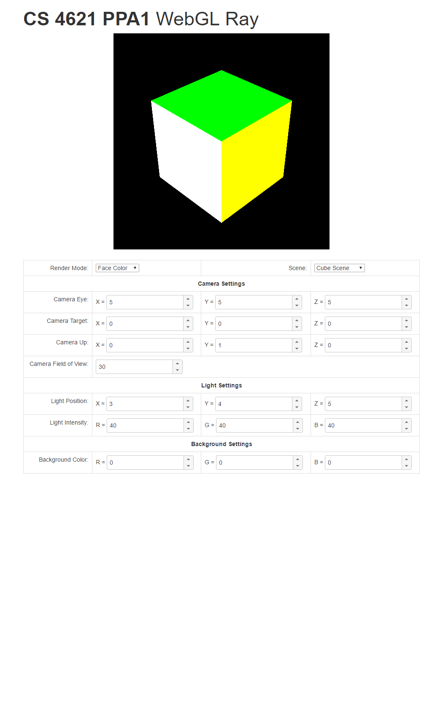 | 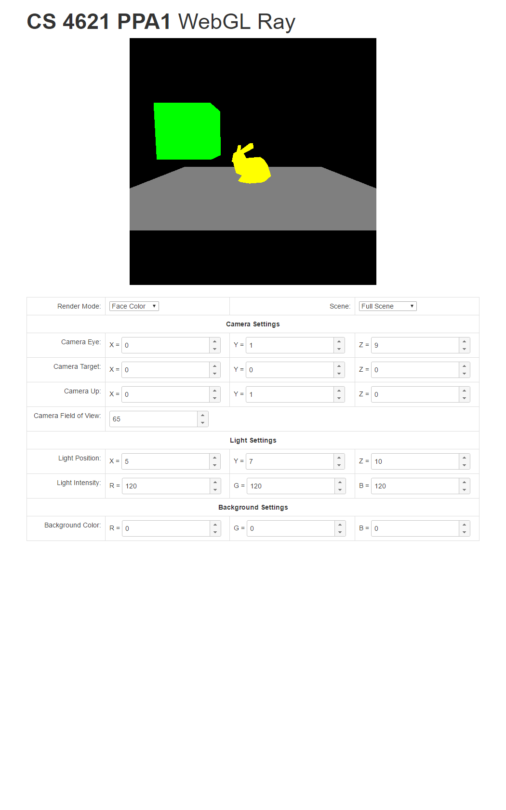 | |
| Normal Mode | 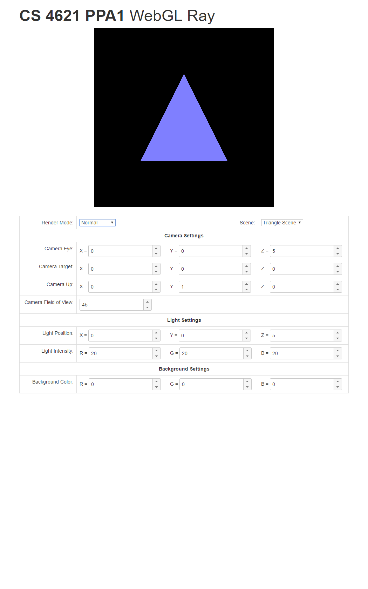 | 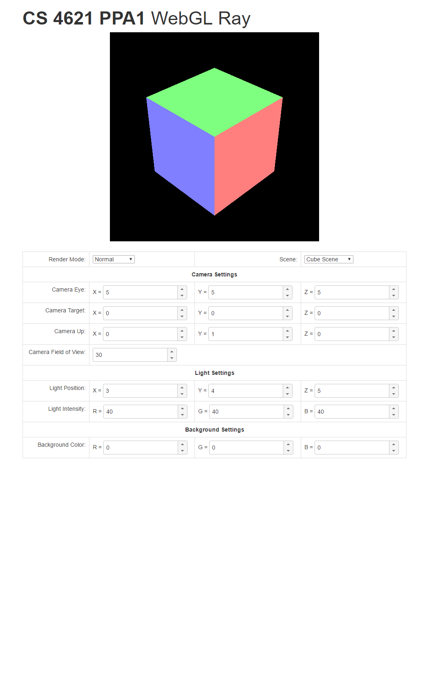 | 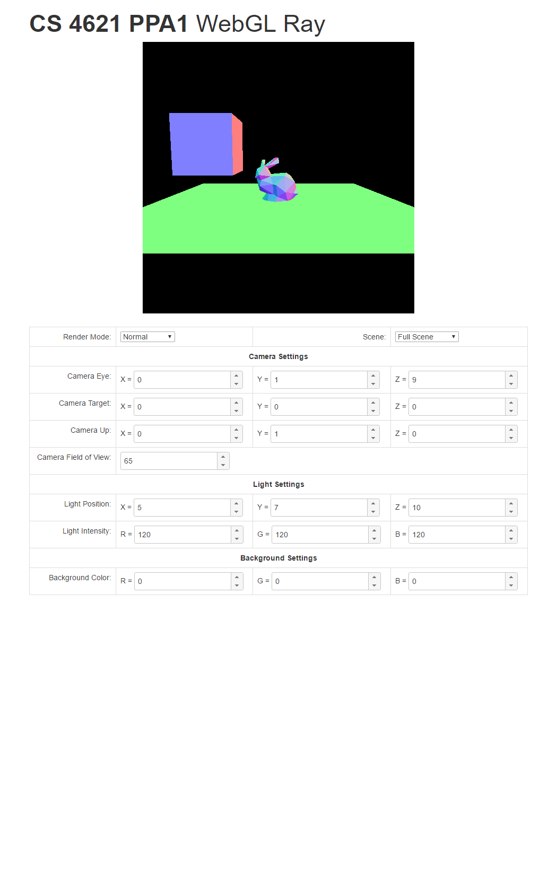 |
| Shadow Mode | 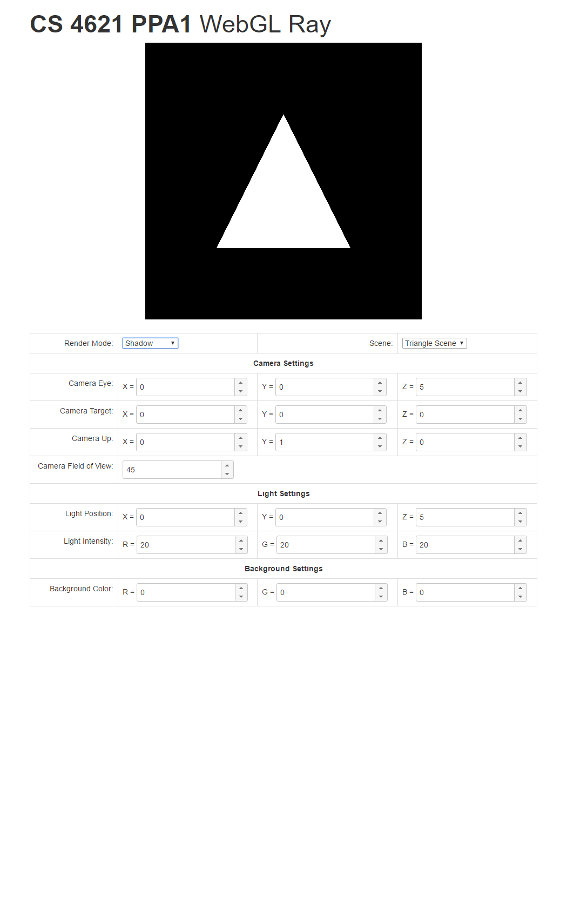 | 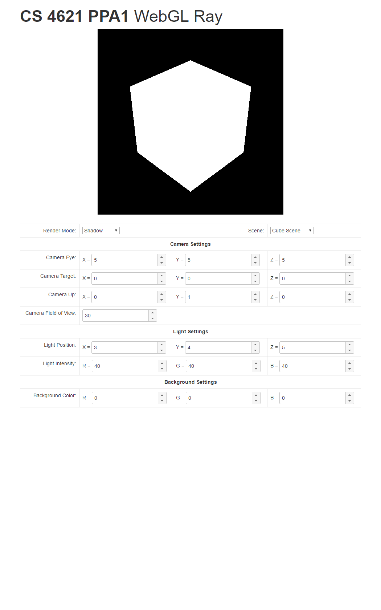 | 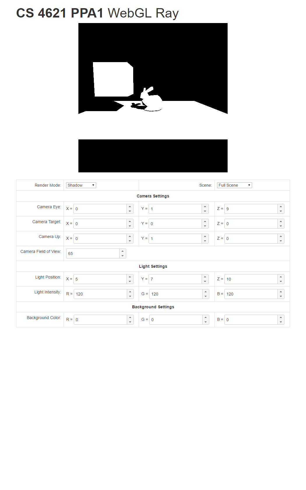 |
| Full Mode | 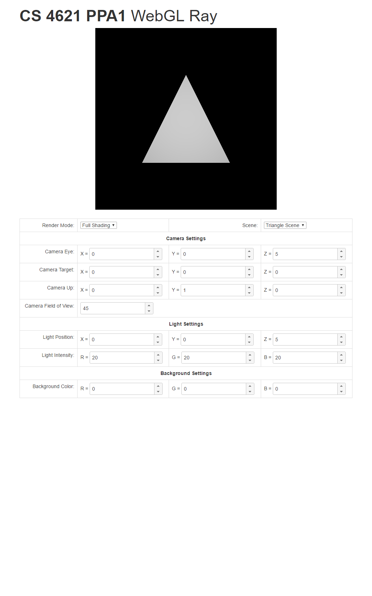 | 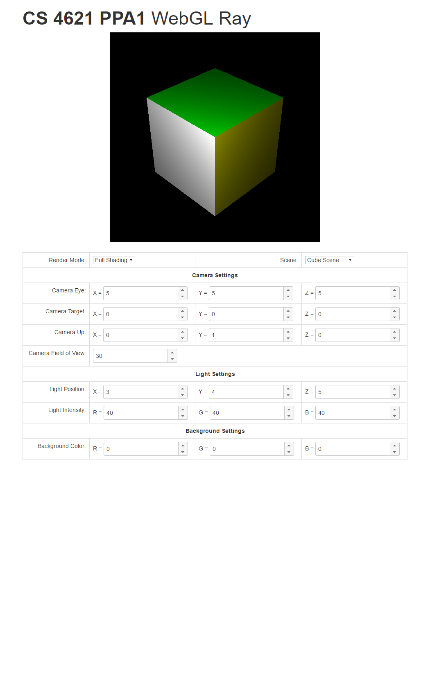 | 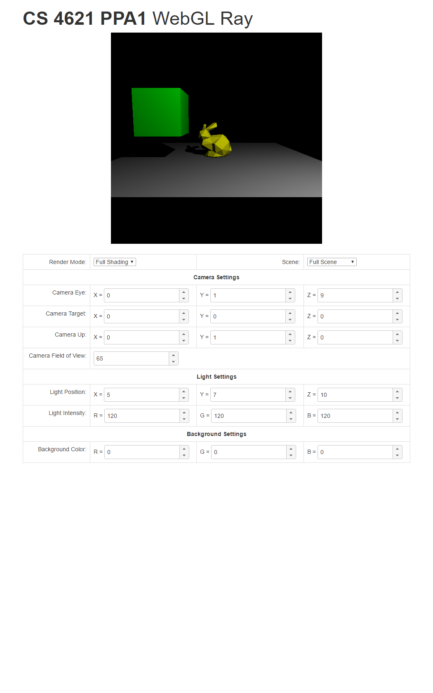 |
Remember, though, to make up new test cases on your own because we will do so to test your program too. Change the background color. Move the camera and the light around. What happens when the light is inside the bunny or the box? Does your program's behavior make sense?
{kind=link}
{kind=link}
{kind=link}
{kind=link}
{kind=link}
{kind=link}
{kind=link}
{kind=link}
{kind=link}
{kind=link}
{kind=link}
{kind=link}
{kind=link}